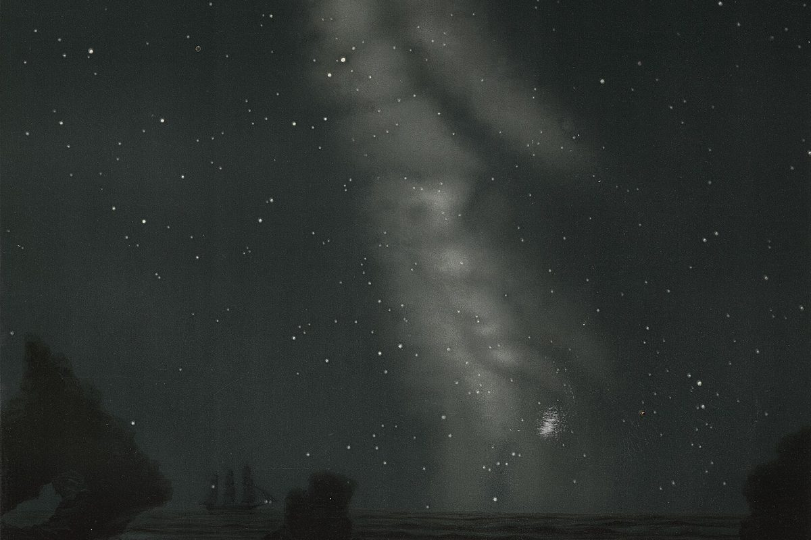
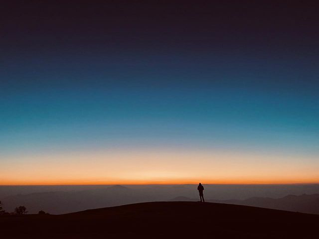
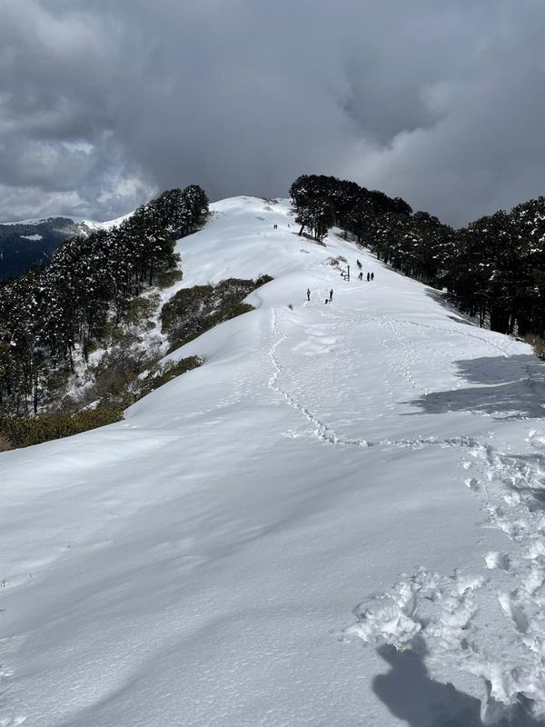
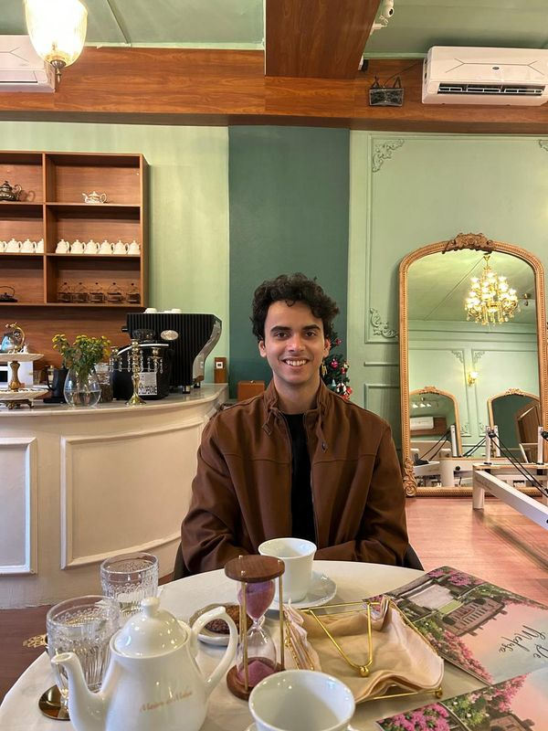
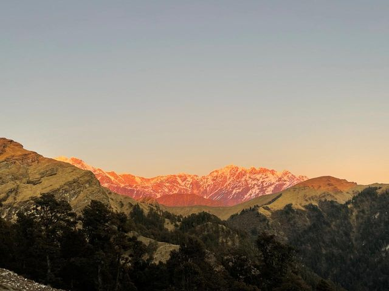
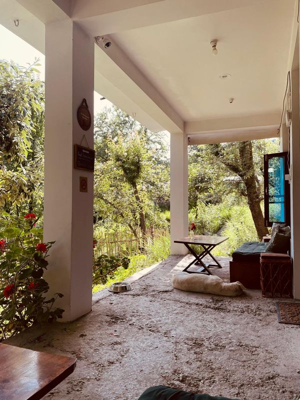
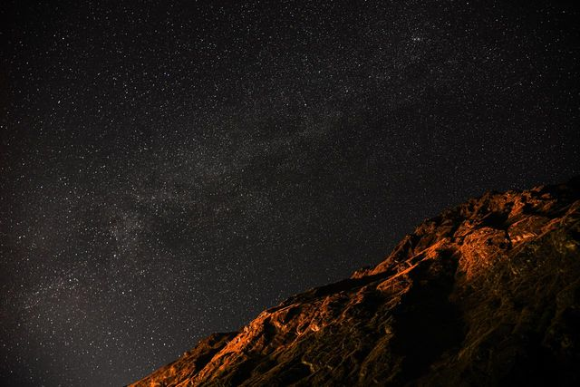
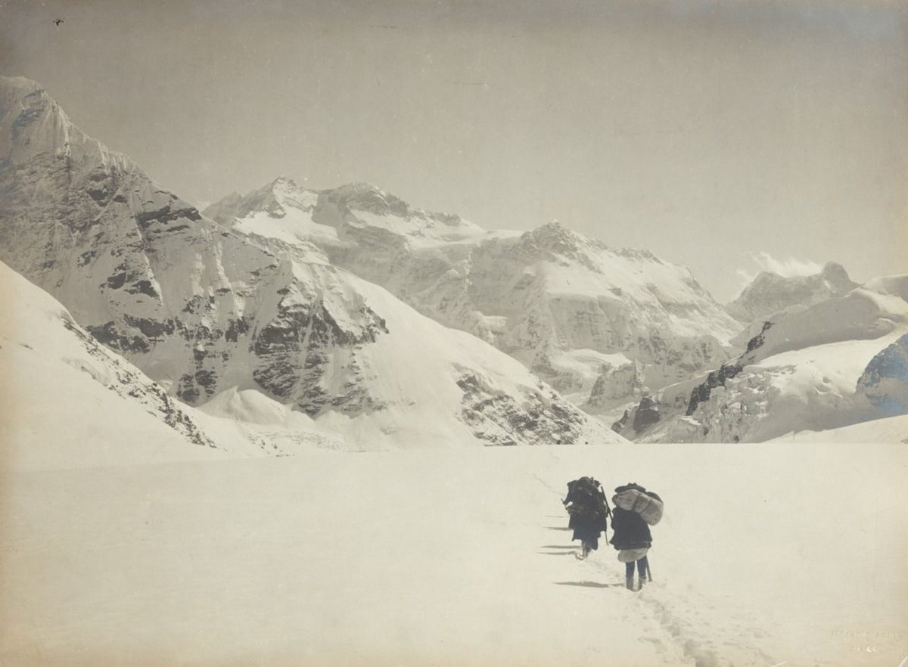

I work on how machines learn. Someday, I want to work on how children learn.
I was born in Delhi. For as long as I can remember, I’ve wondered why we are here, and what really separates me from someone living on the street or in a mansion. I believe life isn’t the journey; consciousness is. And the more aware you are, the more kindness you owe others.
Today I build evals, benchmarks and RL environments for AI models at Abundant, mostly in cybersecurity and long-horizon coding. Put simply, I write the exams and build the practice grounds for AI.


What I want to be
A school founder, someday. I want to build a school in a remote corner of the Himalayas, open to everyone, that teaches kids just two things: how to learn and how to question. I’m bad at teaching right now, and I want to get better at it soon.
And a mountaineer. I hope to climb Everest one day.
“One might say the computer is being used to program the child. In my vision, the child programs the computer.”
What I love
High-altitude treks, especially Ali Bedni Bugyal, often called the largest meadow in Asia. Small towns near the Himalayas. Good food (Havemore in Saket, once in a while), good company, and long conversations over tea.













Work and education
JEE, DTU, Mercor, Handshake AI, Abundant
Looking back, each move took me closer to one question: how do machines actually learn?
- School
- In my last year of school, I took JEE Main, the engineering entrance exam about a million students in India take each year, and scored in the 99.6th percentile.
- College
- I studied computer science at Delhi Technological University and became an Expert on Codeforces, the competitive programming site.
- Data science
- After college, I worked as a data scientist, partnering with one of the biggest quant firms on their algorithms. Along the way, I built and fine-tuned a classification model that did better than the frontier models of the time on its task.
- Mercor
- AI tools were getting better fast, and much of that came from human data: people teaching and testing the models. I wanted to see that up close, so I joined Mercor as a Technical Project Manager.
- Handshake AI
- Next I wanted to work on code data, the data that teaches models to code, so I moved to Handshake AI. I joined as a Strategic Projects Lead, one of the first people on the India team, and helped grow it from 5 to over 100 while building out the code pod.
- Abundant
- Then I wanted to go deeper, into synthetic data pipelines and benchmarks. At Abundant I build evals, benchmarks and RL environments, mostly in cybersecurity and long-horizon coding.
“We can only see a short distance ahead, but we can see plenty there that needs to be done.”

_1899.jpg){kind=link}
The woods are lovely, dark and deep,
But I have promises to keep,
And miles to go before I sleep,
And miles to go before I sleep.